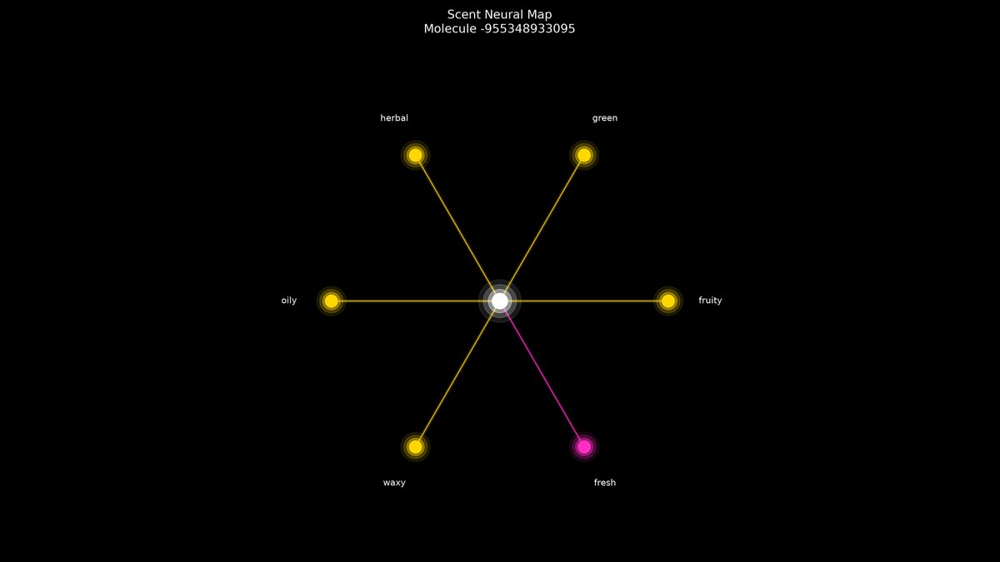
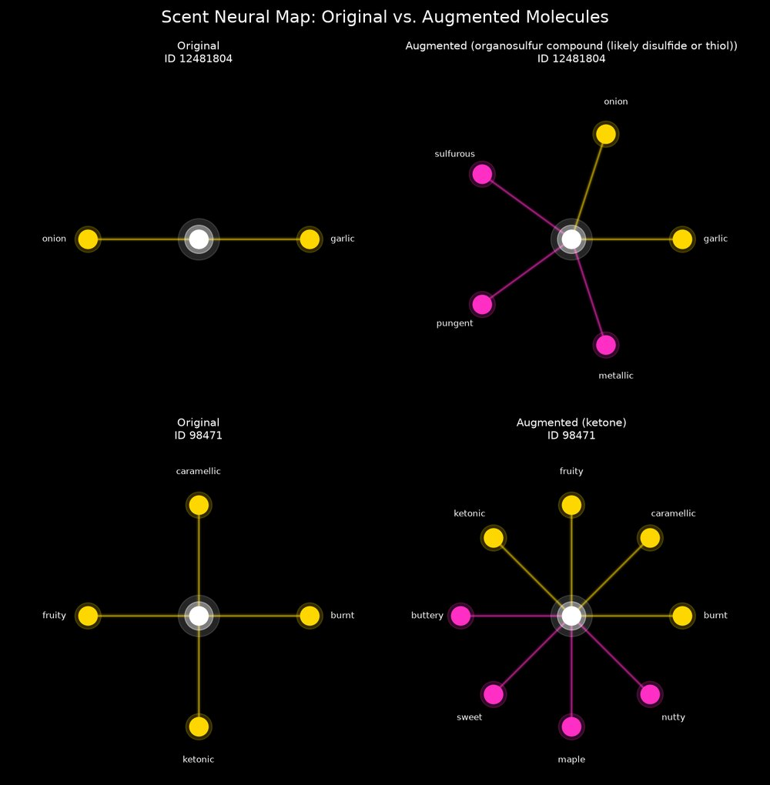

Scent to Art
A team of AI agents that imagines how tweaking a molecule would change its smell, then turns the result into art. Built at the Bowdoin–Bates–Colby Hackathon, where it won prizes.

The idea
Pyrfume's Leffingwell dataset labels molecules with the words people use to describe their smell, like fruity, garlic, or caramellic. I wanted to flip the question around: if you changed a molecule's structure, how would its smell change? And could you see that change?
How it works
- Synthetic Agent: runs one batched Claude web search for real structure–odor research to ground the predictions, and falls back to a second Pyrfume dataset if search is unavailable.
- Augmentation Agent: infers each molecule's likely chemical class from its descriptors and proposes one structural change, like adding a double bond.
- Evaluator Agent: predicts the full odor profile of the modified molecule.
- Supervisor Agent: a circuit breaker that caps the run at 30 API calls, so cost never runs away.
- Visual Agent: draws every molecule as a Scent Neural Map, where gold nodes are notes the molecule kept and magenta nodes are new ones.

The presentation
Scent to Art won prizes at the Bowdoin–Bates–Colby Hackathon, and I presented it to about 100 people, including the president of Bowdoin College.
What's next
The agents' predictions are hypotheses, not lab measurements. The natural next step is to test them against real molecules with known structures, which connects directly to my digital olfaction research.